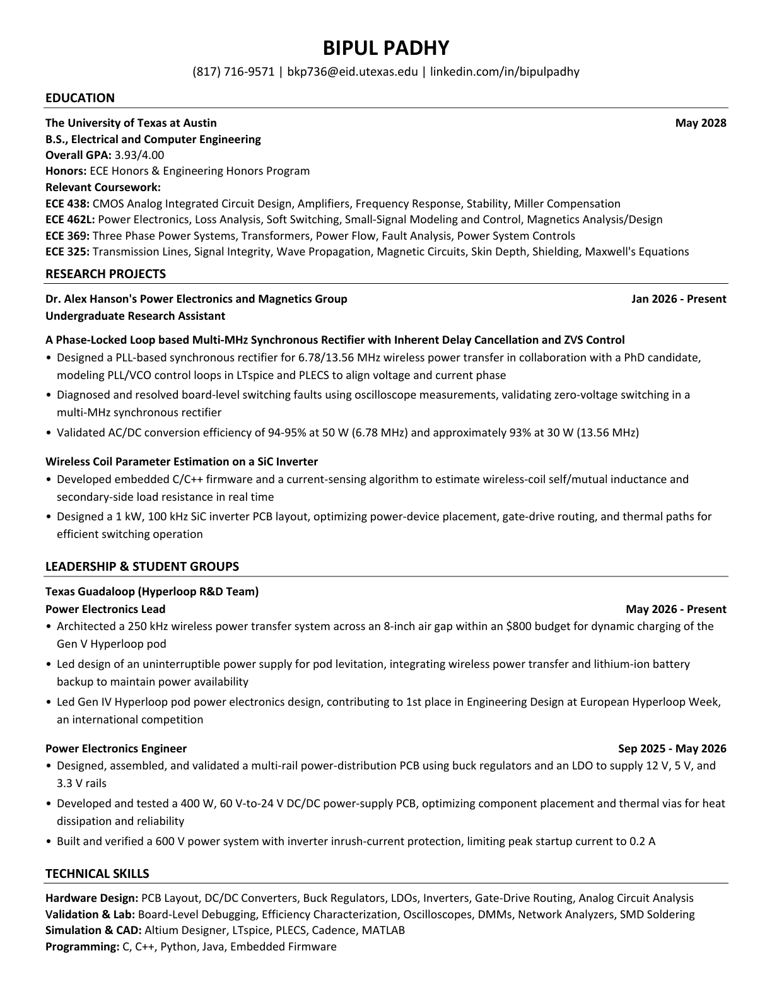

Resume

Text version
BIPUL PADHY (817) 716-9571 | bkp736@eid.utexas.edu | linkedin.com/in/bipulpadhy EDUCATION The University of Texas at Austin B.S., Electrical and Computer Engineering Overall GPA: 3.93/4.00 Honors: ECE Honors & Engineering Honors Program Relevant Coursework: ECE 438: CMOS Analog Integrated Circuit Design, Amplifiers, Frequency Response, Stability, Miller Compensation ECE 462L: Power Electronics, Loss Analysis, Soft Switching, Small-Signal Modeling and Control, Magnetics Analysis/Design ECE 369: Three Phase Power Systems, Transformers, Power Flow, Fault Analysis, Power System Controls ECE 325: Transmission Lines, Signal Integrity, Wave Propagation, Magnetic Circuits, Skin Depth, Shielding, Maxwell's Equations RESEARCH PROJECTS Dr. Alex Hanson's Power Electronics and Magnetics Group Jan 2026 - Present Undergraduate Research Assistant A Phase-Locked Loop based Multi-MHz Synchronous Rectifier with Inherent Delay Cancellation and ZVS Control • Designed a PLL-based synchronous rectifier for 6.78/13.56 MHz wireless power transfer in collaboration with a PhD candidate, modeling PLL/VCO control loops in LTspice and PLECS to align voltage and current phase • Diagnosed and resolved board-level switching faults using oscilloscope measurements, validating zero-voltage switching in a multi-MHz synchronous rectifier • Validated AC/DC conversion efficiency of 94-95% at 50 W (6.78 MHz) and approximately 93% at 30 W (13.56 MHz) Wireless Coil Parameter Estimation on a SiC Inverter • Developed embedded C/C++ firmware and a current-sensing algorithm to estimate wireless-coil self/mutual inductance and secondary-side load resistance in real time • Designed a 1 kW, 100 kHz SiC inverter PCB layout, optimizing power-device placement, gate-drive routing, and thermal paths for efficient switching operation LEADERSHIP & STUDENT GROUPS Texas Guadaloop (Hyperloop R&D Team) Power Electronics Lead May 2026 - Present • Architected a 250 kHz wireless power transfer system across an 8-inch air gap within an $800 budget for dynamic charging of the Gen V Hyperloop pod • Led design of an uninterruptible power supply for pod levitation, integrating wireless power transfer and lithium-ion battery backup to maintain power availability • Led Gen IV Hyperloop pod power electronics design, contributing to 1st place in Engineering Design at European Hyperloop Week, an international competition Power Electronics Engineer Sep 2025 - May 2026 • Designed, assembled, and validated a multi-rail power-distribution PCB using buck regulators and an LDO to supply 12 V, 5 V, and 3.3 V rails • Developed and tested a 400 W, 60 V-to-24 V DC/DC power-supply PCB, optimizing component placement and thermal vias for heat dissipation and reliability • Built and verified a 600 V power system with inverter inrush-current protection, limiting peak startup current to 0.2 A TECHNICAL SKILLS Hardware Design: PCB Layout, DC/DC Converters, Buck Regulators, LDOs, Inverters, Gate-Drive Routing, Analog Circuit Analysis Validation & Lab: Board-Level Debugging, Efficiency Characterization, Oscilloscopes, DMMs, Network Analyzers, SMD Soldering Simulation & CAD: Altium Designer, LTspice, PLECS, Cadence, MATLAB Programming: C, C++, Python, Java, Embedded Firmware May 2028